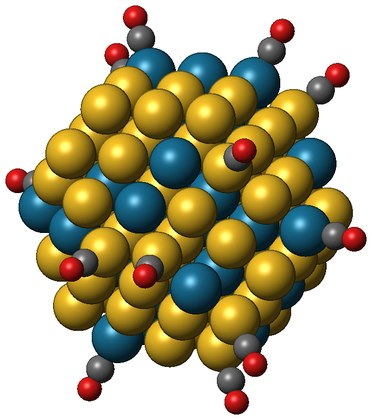
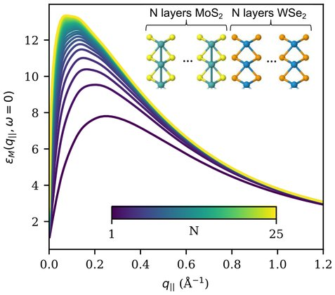
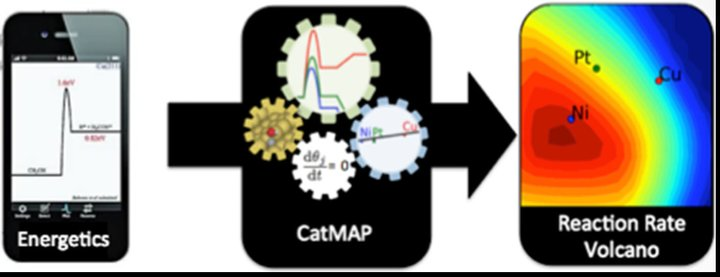
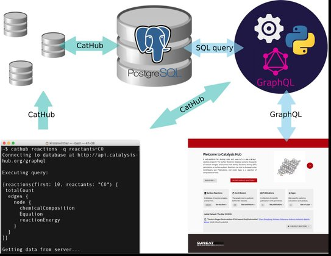
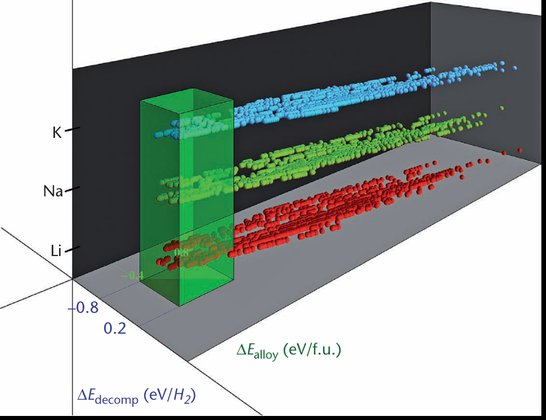

Software
- ASE — Atomic Simulation Environment
- A Python library for setting up, running, visualising and analysing atomistic simulations.
- GPAW
- An open Python package for electronic structure calculations with density functional theory, based on the projector-augmented wave method.
- CatMAP
- A software package for descriptor-based microkinetic mapping of catalytic trends.
- Catalysis-Hub.org
- An open electronic structure database for surface reactions.
- CMR — Computational Materials Repository
- Databases of calculated materials properties, openly available for browsing and download.





We contribute to the development and maintenance of open-source scientific software for atomic-scale simulations, electronic structure theory and microkinetic modelling, and to data repositories for materials design and curation.